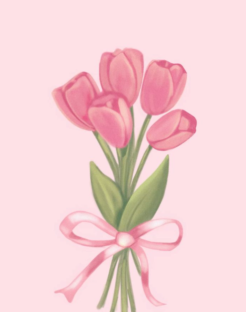

Tulips

Tulips are spring-blooming perennial flowers that grow from bulbs and are known for their vibrant,
cup-shaped blooms. They come in a wide array of colors, including red, yellow, pink, orange, purple, and even white,
often with a different colored blotch at the base. Tulips are a popular choice for gardens and bouquets,
and they symbolize happiness, love, and good luck.
Back To Home